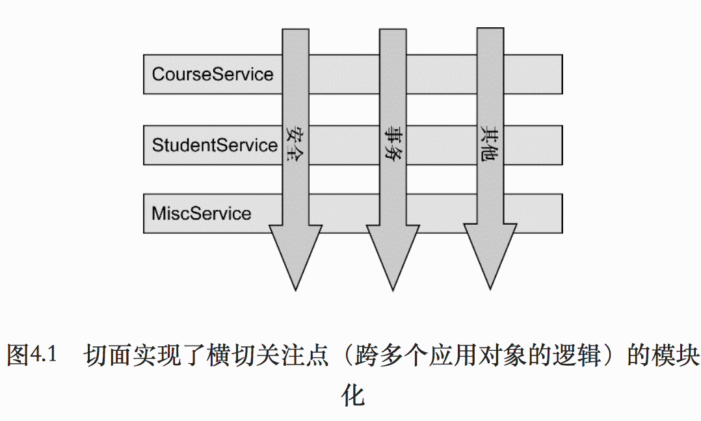
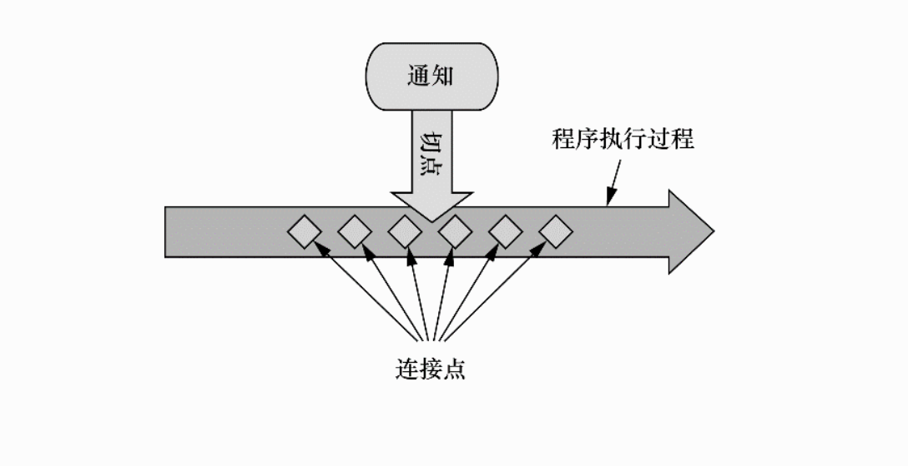
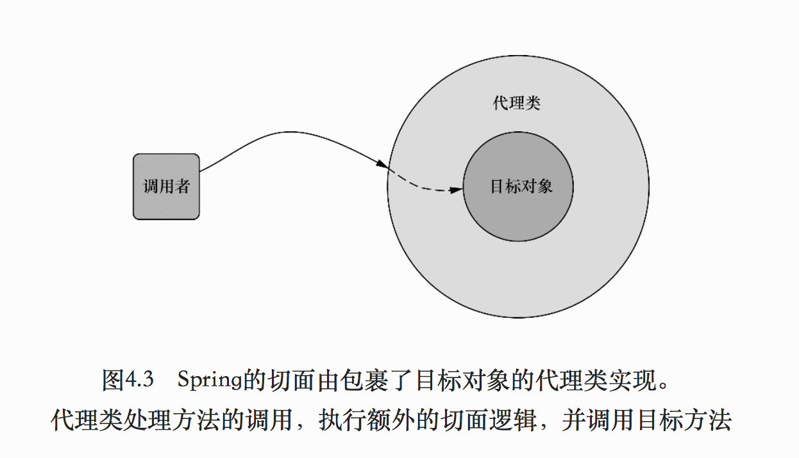
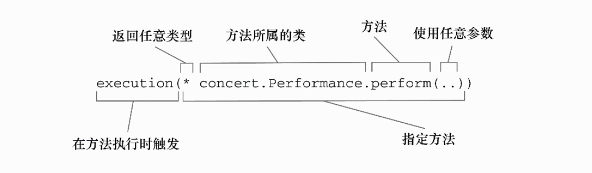
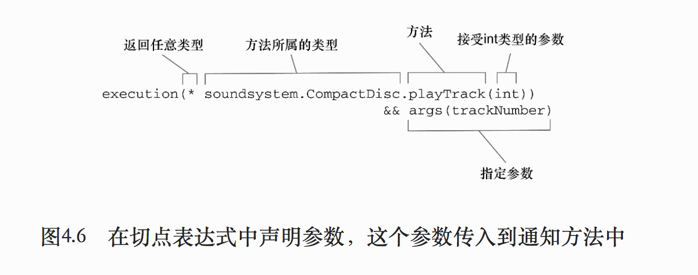

什么是面向切面编程
切面能帮助我们模块化横切关注点。横切关注点可以背描述为影响应用多处的功能。 
图4.1 展现了一个被划分为模块的典型应用。每个核心功能都是为特定业务领域提供服务，但是这些模块斗需要类似的辅助功能，例如安全和事务管理。
切面提供了取代继承和委托的另一种可选方案。在使用面向切面编程时，我们仍可以在一个地方定义通用的功能，但是可以通过声明的方式定义这个功能要以何种方式在何处一个何处应用，而无需修改收影响的类。横切关注点可以被模块化为特殊的类，这些类被称为切面。有两个好处：
- 每个关注点抖集中于一个地方，而不是分散到多处代码中。
- 服务模块更简洁，因为它们只包含主要的关注点的代码，而次要关注点的代码被转移到切面中。
定义AOP的术语 
通知(Advice)
AOP术语中，切面的工作被称为通知。通知定义了切面是什么以及何时使用。除了描述切面要完成的工作，通知还解决了何时之行这个工作的问题。
Spring 切面可以应用5中类型的通知：
- 前置通知：
- 后置通知
- 返回通知
- 异常通知
- 环绕通知
连接点
应用可能有数以千计的时机应用通知。这些时机被称为连接点。连接点是在应用执行过程中能够插入切面的一个点。这个点可以是调用方法时，跑出异常时，甚至修改一个字段时。
切点
一个切面并不需要通知应用的所有连接点。切点有助于缩小切面所通知的连接点的问题。
如果说通知定义了切面的“什么”和“何时”的话，那么切点九定义了何处。切点的定义会匹配通知所要织入的一个或多个连接点。我们通常使用明确的类和方法名称，或是使用正则表达式定义所匹配的类和方法名称类指定这些切点。
切面
切面时通知和切点的结合。通知和切点共同定义了切面的全部内容－－它是什么，在何时和何处完成其功能。
引入
引入允许我们想现有的类添加新方法或属性。
织入
织入是把切面应用到目标对象并创建新的代理对象的过程。切面指定的连接点被织入到目标对象中。在目标对象的生命周期里有多个点可以进行织入：
Spring对AOP的支持
Spring提供了4中类型的AOP支持：
- 基于代理的经典Spring AOP
- 纯POJO切面
- @AspectJ注解驱动的切面
- 注入式AspectJ切面（适用于Spring各版本）
Spring通知是Java编写的。
Spring在运行时通知对象，通过在代理类中包裹切面，Spring在运行期把切面织入到Spring管理的bean中。图中代理类封装了目标类，并拦截被通知的方法的调用，再把调用转发给真正的目标bean。当代理拦截到方法调用时，在调用目标bean方法之前，会执行切面逻辑。 
直到应用需要被代理的bean时，Spring才会创建代理对象。
Spring 只支持方法级别的连接点。
通过切点来选择连接点
Spring仅支持AspectJ切点指示器的一个子集。
Spring AOP所支持的AspectJ切点指示器。
| AspectJ指示器 |
描述 |
| arg() |
限制连接点匹配参数为指定类型的执行方法 |
| @args() |
限制连接点匹配参数有指定注解标注的执行方法 |
| execution() |
用于匹配是连接点的执行方法 |
| this() |
限制连接点匹配AOP代理的bean引用为指定类型的类 |
| target |
限制连接点匹配目标对象为指定类型的类 |
| @target |
限制连接点匹配特定的执行对象，这些对象对对应的类要具有指定类型的注解 |
| within() |
限制连接点匹配指定的类型 |
| @within() |
限制连接点匹配指定注解所标注的类型（当使用Spring AOP时，方法定义在由指定的注解所标注的类里） |
| @annotation |
限定匹配带有指定注解的连接点 |
在Spring中尝试使用AspectJ其他指示器时，将会抛出异常。
注解只用在饿的粗体哦你指示器是实际执行匹配的，其他的指示器都是用来限制匹配的。executeion指示器是在编写切点定义时最主要是用的指示器。
编写切点
Performance可以代表任何类型的现场表演。编写Performance的perform()方法出发通知。
1 2 3 4
| package concert; public interface Performance { public void perform(); }
|

上图展示 了一个切点表达式，这个表达式能够设置当perform()方法执行时触发通知的调用。
方法表达式以”*”号开始, 表示不关系方法返回的类型。指定了全限定类名和方法名. 使用两个点号(..)表明切点要选择任意的perform()方法, 无论该方法的入参是什么。
如果需要匹配的切点仅匹配concert包，可以使用within()指示器限制匹配。
 指示器.png)
指示器.png)
使用&&操作符把execution()和within()指示器连接在一起形成与(and) 关系
使用注解创建切面
- 定义切面
1 2 3 4 5 6 7 8 9 10 11 12 13 14 15 16 17 18 19 20 21 22 23 24 25 26 27 28 29 30 31 32 33
| package concert; import org.aspectj.lang.annotation.AfterReturning; import org.aspectj.lang.annotation.AfterThrowing; import org.aspectj.lang.annotation.Aspect; import org.aspectj.lang.annotation.Before; @Aspect public class Audience { @Before("execution(** concert.Performent.perform(..))") public void silenceCellPhone() { System.out.println("silencing Cell Phone"); } @Before("execution(** concert.Performent.perform(..))") public void taskSeats() { System.out.println("Taking seats"); } @AfterReturning("execution(** concert.Performent.perform(..))") public void applause() { System.out.println("CLAP CLAP CLAP!"); } @AfterThrowing("execution(** concert.Performent.perform(..))") public void demandReFund() { System.out.println("Demaning a refund"); } }
|
- AspectJ提供的五个注解来定义通知
| 注解 |
通知 |
| @After |
通知方法会在目标方法返回或抛出异常后调用 |
| @AfterReturning |
通知方法会在目标方法返回后调用 |
| @AfterThrowing |
通知方法会在目标方法抛出异常后调用 |
| @Around |
通知方法会将目标方法封装起来 |
| @Before |
通知方法在目标方法调用之前执行 |
- 通过@Pointcut注解声明频繁使用的切点表达式
1 2 3 4 5 6 7 8 9 10 11 12 13 14 15 16 17 18 19 20 21 22 23 24 25 26 27 28 29 30 31 32 33 34 35 36 37
| package concert; import org.aspectj.lang.annotation.*; * Created by storm on 16/11/12. */ @Aspect public class Audience { @Pointcut("execution(** concert.Performent.perform(..))") public void performance() { } @Before("performance()") public void silenceCellPhone() { System.out.println("silencing Cell Phone"); } @Before("performance()") public void taskSeats() { System.out.println("Taking seats"); } @AfterReturning("performance()") public void applause() { System.out.println("CLAP CLAP CLAP!"); } @AfterThrowing("performance()") public void demandReFund() { System.out.println("Demaning a refund"); } }
|
- 使用JavaConfig启用AspectJ注解的自动代理
1 2 3 4 5 6 7 8 9 10 11 12 13 14 15 16 17 18 19 20 21
| package concert; import org.springframework.context.annotation.Bean; import org.springframework.context.annotation.ComponentScan; import org.springframework.context.annotation.Configuration; import org.springframework.context.annotation.EnableAspectJAutoProxy; * Created by storm on 16/11/12. */ @Configuration @EnableAspectJAutoProxy @ComponentScan public class SpringConfig { @Bean public Audience audience() { return new Audience(); } }
|
在配置类中必须使用EnableAspectJAutoProxy注解启动自动代理功能，否则Audience类就会和其他类一样，只是Spring容器中的一个bean。
Spring的AspectJ自动代理仅仅使用@AspectJ作为创建切面的指导, 切面依然是基于代理的。本质上，他依然是Spring基于代理的切面。
- 创建环绕通知
环绕通知将被通知的目标方法完全包装起来。就像在一个通知方法中国年同时编写了前置通知和后置通知。以下是使用环绕通知的Audience切面
1 2 3 4 5 6 7 8 9 10 11 12 13 14 15 16 17 18 19 20 21 22 23 24 25 26 27 28 29 30
| package concert; import org.aspectj.lang.ProceedingJoinPoint; import org.aspectj.lang.annotation.*; * Created by storm on 16/11/12. */ @Aspect public class Audience { @Pointcut("execution(** concert.Performent.perform(..))") public void performance() { } @Around("performance()") public void watchPerformance(ProceedingJoinPoint proceedingJoinPoint) { try { System.out.println("Silencing cell phones"); System.out.println("Taking seats"); proceedingJoinPoint.proceed(); System.out.println("CLAP CLAP CLAP!"); System.out.println("Demanding a refund"); } catch (Throwable throwable) { throwable.printStackTrace(); } } }
|
- 使用带参数的通知
1 2 3 4 5 6 7 8 9 10 11 12 13 14 15 16 17 18 19 20 21 22 23 24 25 26 27 28 29 30 31
| package soundsystem; import org.aspectj.lang.annotation.Aspect; import org.aspectj.lang.annotation.Before; import org.aspectj.lang.annotation.Pointcut; import java.util.HashMap; import java.util.Map; @Aspect public class TrackCounter { private Map<Integer, Integer> trackCounts = new HashMap<>(); @Pointcut("execution(* soundsystem.CompactDisc.playTrack(int))" + " && args(trackNymber)") public void trackPlayed() { } @Before("trackPlayed(trackNumber)") public void countTrack(int trackNumber) { int currentCount = getPlayCount(trackNumber); trackCounts.put(trackNumber, currentCount + 1); } private int getPlayCount(int trackNumber) { return trackCounts.containsKey(trackNumber) ? trackCounts.get(trackNumber) : 0; } }
|
